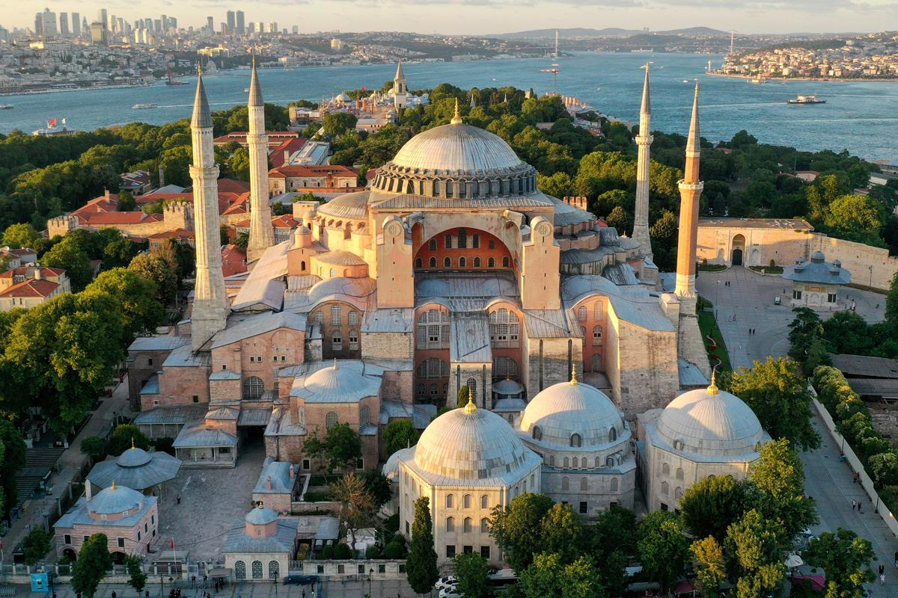
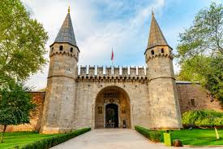
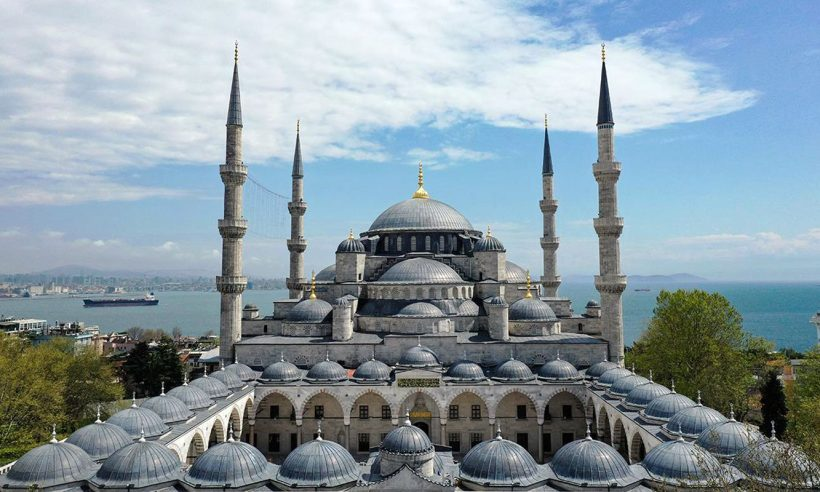
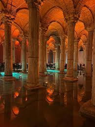
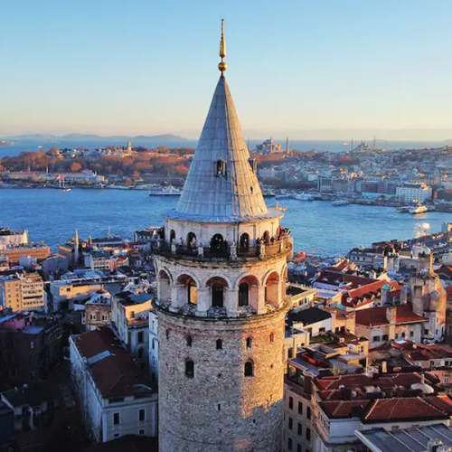
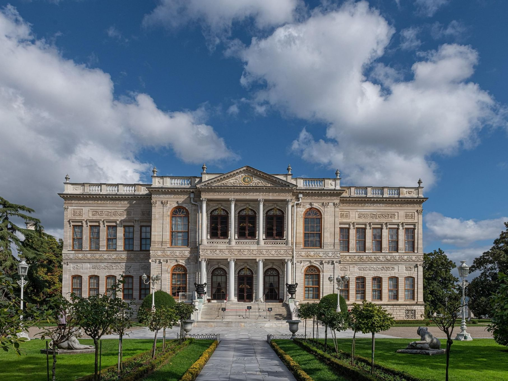
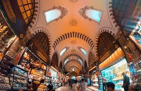

İstanbul'un Tarihi Hazineleri (Historical Places)
İstanbul'un köklü tarihini yansıtan en önemli durakları aşağıda inceleyebilirsiniz.
1. Ayasofya (Hagia Sophia)
537 yılında Bizans İmparatoru I. Justinianus tarafından kilise olarak yaptırılmıştır. 1453’te İstanbul’un fethinden sonra camiye çevrilmiş, 1935’te müze olmuş ve 2020’de tekrar cami olarak ibadete açılmıştır.

Resmi Web Sitesini Ziyaret Et
2. Topkapı Sarayı
Fatih Sultan Mehmet tarafından 1478 yılında yaptırılan saray, yaklaşık 400 yıl boyunca Osmanlı padişahlarının yönetim merkezi olmuştur.

Daha Fazla Bilgi
3. Sultanahmet Camii (Blue Mosque)
İç kısmındaki mavi İznik çinileri nedeniyle Avrupa’da “Blue Mosque” olarak bilinir. Ayasofya’nın tam karşısında bulunur.

4. Yerebatan Sarnıcı
336 sütunlu yapısı ve Medusa başlı sütun kaideleri ile oldukça gizemli bir atmosfere sahiptir.

5. Galata Kulesi
1348 yılında Cenevizliler tarafından inşa edilmiştir. Günümüzde panoramik İstanbul manzarasıyla ünlüdür.

6. Dolmabahçe Sarayı
Osmanlı’nın batılılaşma dönemini yansıtan saray, Mustafa Kemal Atatürk’ün hayatını kaybettiği yer olmasıyla da önemlidir.

7. Kapalıçarşı
Dünyanın en eski ve en büyük kapalı çarşılarından biridir. Yaklaşık 4000 dükkân barındırır.
